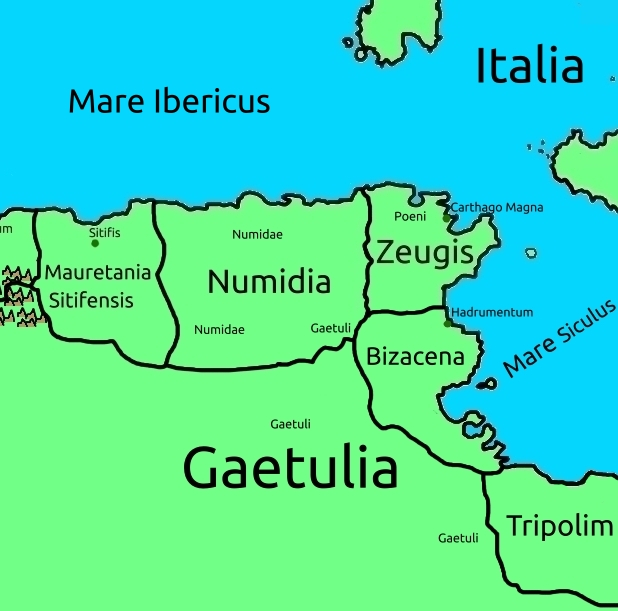

Numidia, Cartaginis, and Bizacena
Both the Mauri of Mauritania Tingitania especially, and the Numidae of Numidia, are thought to be "Afri", natives of the continent of Africa, named from one of Abraham's children, "Afer".
Numidia is called as such because of it's inhabitants, who have no clear place of residence. In their language, someone with an uncertain or vague place of living is called a "numidia", which is one of the surprisingly many possible origins of the word "nomad".
It holds some forests, and, like the previous areas, there are still mountains. Though not directly connected to the main Atlas chain, they are today considered part of the Atlas mountains.